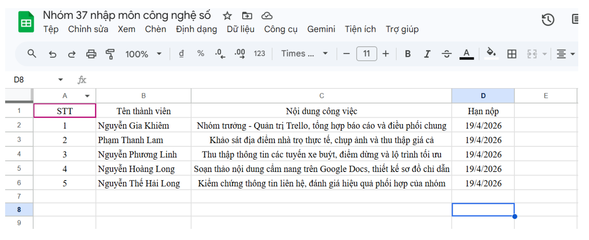
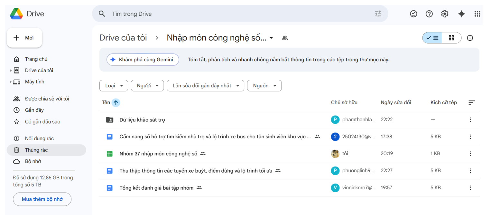
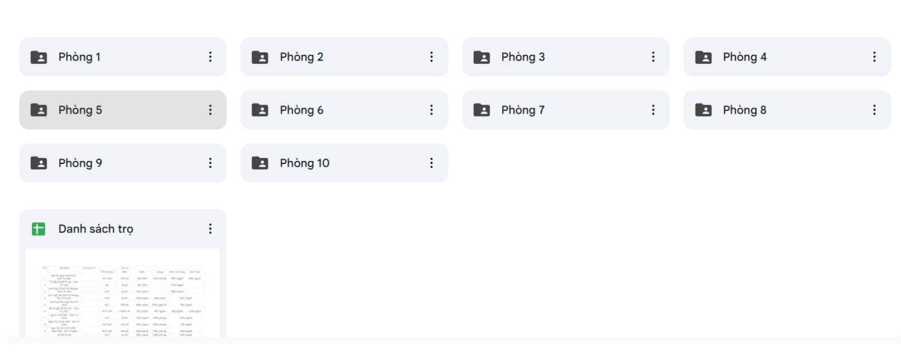
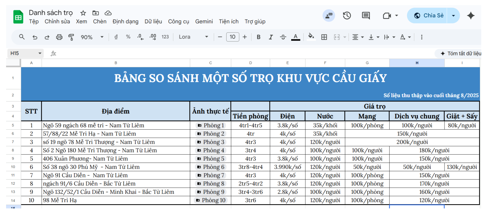
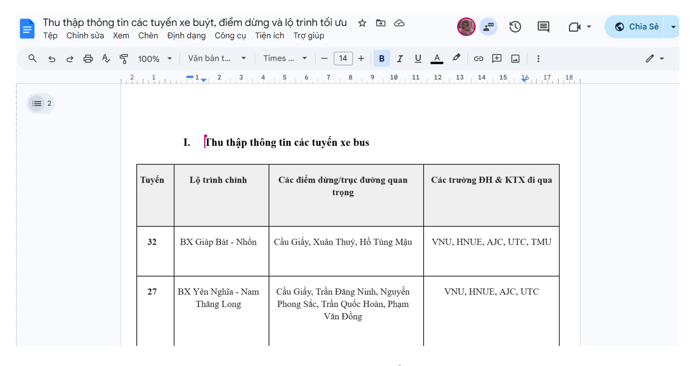
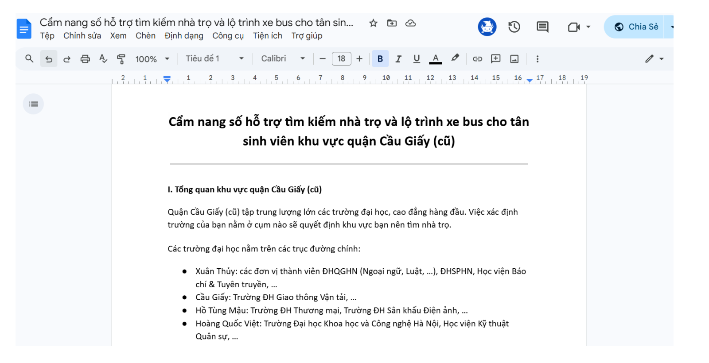
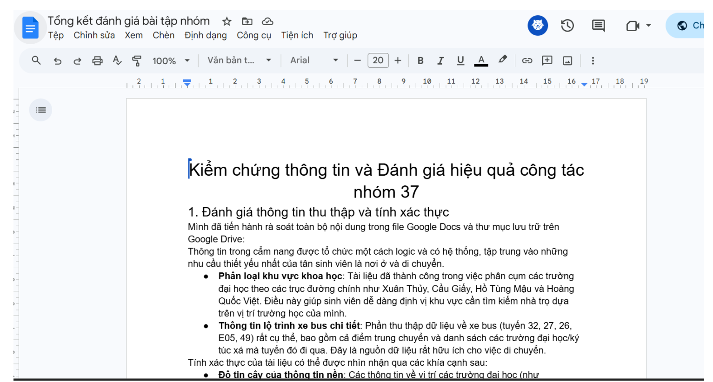
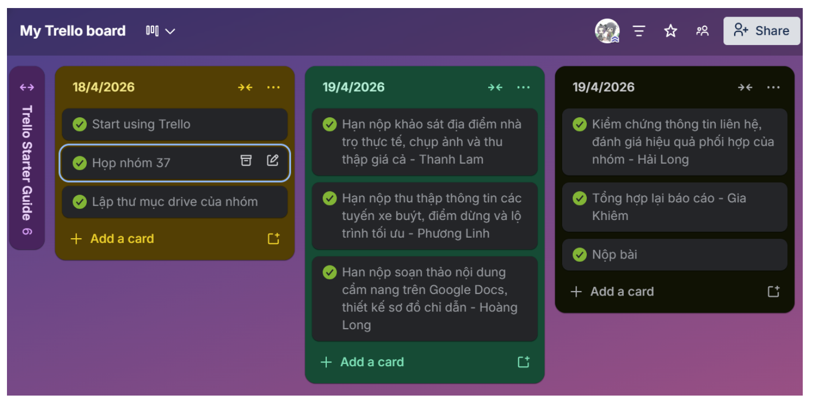
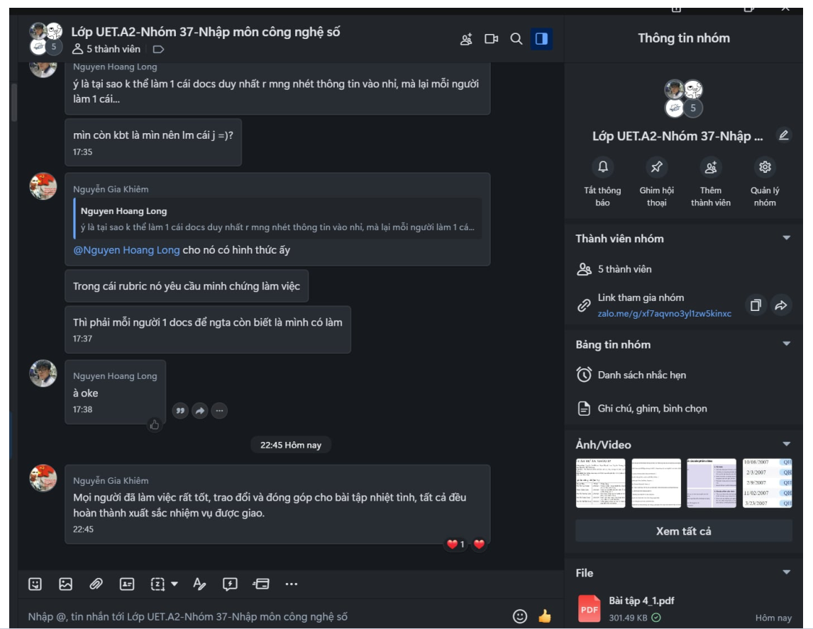

04
Sử dụng công cụ hợp tác trực tuyến cho dự án nhóm
Báo cáo dự án nhóm 37
Thành viên nhóm: Nguyễn Gia Khiêm, Phạm Thanh Lam, Nguyễn Phương Linh, Nguyễn Hoàng Long, Nguyễn Thế Hải Long.
Yêu cầu bài tập: Thực hành và đánh giá hiệu quả các công cụ hợp tác trực tuyến trong quản lý dự án nhóm.
Dự án thực hiện: Xây dựng cẩm nang số hỗ trợ tìm kiếm nhà trọ và lộ trình xe buýt cho tân sinh viên khu vực Cầu Giấy.
Bảng phân công nhiệm vụ
| STT | Họ và tên | MSV | Phân công |
|---|---|---|---|
| 1 | Nguyễn Gia Khiêm | 25024124 | Nhóm trưởng - Quản trị Trello, tổng hợp báo cáo và điều phối chung. |
| 2 | Phạm Thanh Lam | 25024126 | Khảo sát địa điểm nhà trọ thực tế, chụp ảnh và thu thập giá cả. |
| 3 | Nguyễn Phương Linh | 25024128 | Thu thập thông tin các tuyến xe buýt, điểm dừng và lộ trình tối ưu. |
| 4 | Nguyễn Hoàng Long | 25024130 | Soạn thảo nội dung cẩm nang trên Google Docs, thiết kế sơ đồ chỉ dẫn. |
| 5 | Nguyễn Thế Hải Long | 25024132 | Kiểm chứng thông tin liên hệ, đánh giá hiệu quả phối hợp của nhóm. |
1. Giới thiệu
1.1 Bối cảnh và mục tiêu bài tập
Trong bối cảnh học tập và làm việc hiện đại, khả năng sử dụng thành thạo các công cụ hợp tác trực tuyến là một kỹ năng thiết yếu. Bài tập yêu cầu nhóm lựa chọn, thiết lập và sử dụng ít nhất 3 công cụ thuộc các danh mục khác nhau như quản lý dự án, soạn thảo, lưu trữ và giao tiếp để thực hiện một dự án nhóm.
Mục tiêu là trải nghiệm thực tế quy trình quản lý dự án, theo dõi tiến độ, cộng tác tài liệu và giao tiếp hiệu quả trên không gian số.
1.2 Dự án của nhóm
Nhóm 37 chọn thực hiện dự án “Xây dựng cẩm nang số hỗ trợ tìm kiếm nhà trọ và lộ trình xe buýt cho tân sinh viên khu vực Cầu Giấy”. Đây là dự án có tính thực tiễn cao, đòi hỏi sự phối hợp trong việc tổng hợp dữ liệu địa điểm, khảo sát thực tế và trình bày nội dung trực quan.
1.3 Lựa chọn các công cụ hợp tác
- Trello: Quản lý dự án, trực quan hóa đầu việc và deadline.
- Google Drive: Lưu trữ chung, quản lý phiên bản và phân quyền.
- Google Sheets / Google Docs: Lập kế hoạch và soạn thảo nội dung theo thời gian thực.
- Zalo: Trao đổi nhanh, thảo luận và gửi thông báo.
2. Quá trình triển khai và sử dụng công cụ
2.1 Giai đoạn 1: Lập kế hoạch và phân công
Trong buổi họp trực tuyến, nhóm trưởng nhắc lại mục tiêu của dự án là thống nhất hướng làm cẩm nang số hỗ trợ tân sinh viên, chọn khu vực khảo sát nhà trọ, xác định các tuyến xe buýt trọng điểm, phân công nhiệm vụ và chốt timeline.
Google Sheets được sử dụng để giúp các thành viên có cái nhìn tổng quan, minh bạch về trách nhiệm và các mốc thời gian cần hoàn thành.
2.2 Giai đoạn 2: Thiết lập không gian làm việc
Nhóm thiết lập một thư mục chia sẻ chung trên Google Drive với tên “Bài tập nhóm 37 - Dự án Cẩm nang số”. Đây là kho tài nguyên trung tâm của nhóm.
- Phân quyền: Tất cả thành viên được cấp quyền Editor.
- Tổ chức: Tài liệu quan trọng được lưu trữ theo từng nội dung.
- Lưu trữ đa phương tiện: Ảnh chụp nhà trọ và sơ đồ xe buýt được tải lên để kiểm chứng.
2.3 Giai đoạn 3: Triển khai và quản lý tiến độ
Các đầu việc được chia nhỏ thành các thẻ công việc trên Trello. Trello đóng vai trò là công cụ quản lý tiến độ trực quan.
- Các cột To Do, Doing, Done giúp theo dõi trạng thái công việc.
- Khi hoàn thành, thành viên kéo thẻ sang cột hoàn thành.
- Nhóm trưởng dễ dàng nắm tiến độ chung mà không cần hỏi từng người.
2.4 Giai đoạn 4: Giao tiếp và cộng tác
Zalo được sử dụng để thảo luận nhanh, gửi thông báo tức thời và trao đổi các vấn đề phát sinh. Google Docs được dùng để các thành viên cùng chỉnh sửa nội dung cẩm nang, góp ý trực tiếp bằng tính năng comment.
3. Đánh giá hiệu quả và sự tích hợp
3.1 Đánh giá chi tiết từng công cụ
Nhóm nhận thấy mỗi công cụ đều phát huy vai trò trong việc kết nối các thành viên từ xa. Đặc biệt, Google Docs giúp việc tổng hợp báo cáo diễn ra nhanh chóng.
3.2 Đánh giá sự tích hợp và hiệu quả tổng thể
Quy trình làm việc của nhóm diễn ra theo hướng liền mạch: Google Sheets dùng để lên ý tưởng và kế hoạch, Trello dùng để quản lý đầu việc, Google Drive dùng để lưu trữ dữ liệu, Zalo dùng để thảo luận nhanh và Google Docs dùng để hoàn thiện sản phẩm.
| Công cụ | Ưu điểm | Nhược điểm và cách khắc phục |
|---|---|---|
| Google Drive & G-Suite | Cộng tác thời gian thực, không cần gửi file qua lại. Có lịch sử chỉnh sửa, phân quyền chi tiết và tích hợp tốt với hệ sinh thái Google. | Cần kết nối Internet ổn định. Google Sheets/Docs có thể không mạnh bằng Office offline. Nhóm khắc phục bằng cách thống nhất font chữ và bố cục từ đầu. |
| Trello | Trực quan, dễ sử dụng, thao tác kéo-thả đơn giản. Có deadline, gắn thành viên và app di động tiện lợi. | Bản miễn phí có thể bị giới hạn với dự án phức tạp. Ngoài ra, thành viên dễ quên cập nhật nếu không tạo thói quen. |
| Zalo | Nhanh chóng, quen thuộc, dễ chia sẻ file, hình ảnh, link và luôn bật. | Dễ bị xao lãng, tin nhắn quan trọng dễ bị trôi. Nhóm khắc phục bằng cách cập nhật quyết định cuối cùng lên Trello hoặc Google Docs. |
Nhóm cũng dán link Google Drive trực tiếp vào thẻ Trello để các thành viên có thể truy cập nhanh vào tài liệu cần làm. Thay vì dùng một công cụ cho tất cả, nhóm dùng Trello để quản lý tiến độ, Drive để lưu trữ ảnh và dữ liệu, Zalo để giao tiếp nhanh.
4. Khó khăn gặp phải và giải pháp
4.1 Khó khăn 1: Xao lãng và trôi thông tin trên Zalo
Mô tả: Zalo là nền tảng cá nhân nên dễ bị cuốn vào các cuộc trò chuyện ngoài lề. Các thông tin quan trọng như link vị trí nhà trọ, số điện thoại chủ nhà có thể bị trôi đi nhanh chóng.
Giải pháp: Nhóm trưởng chủ động tổng kết các quyết định quan trọng sau mỗi buổi thảo luận và cập nhật chúng lên Trello. Đồng thời, nhóm sử dụng tính năng reply để giữ hội thoại đúng chủ đề.
4.2 Khó khăn 2: Quên cập nhật tiến độ trên Trello
Mô tả: Trong ngày đầu, một số thành viên đã khảo sát xong nhưng quên di chuyển thẻ Trello, khiến nhóm trưởng khó theo dõi tiến độ.
Giải pháp: Nhóm trưởng thực hiện check-in nhanh 5 phút mỗi sáng trên Zalo, tag tên thành viên và yêu cầu cập nhật trạng thái Trello.
5. Kết luận
Thông qua việc thực hiện dự án “Xây dựng cẩm nang số hỗ trợ tìm kiếm nhà trọ và lộ trình xe buýt cho tân sinh viên khu vực Cầu Giấy”, Nhóm 37 đã áp dụng thành công hệ sinh thái công cụ hợp tác trực tuyến bao gồm Google Drive, Google Sheets/Docs, Trello và Zalo.
- Hiểu ưu, nhược điểm của từng công cụ: Nhóm biết tận dụng Trello để quản lý tiến độ, Google Docs để soạn thảo thời gian thực và Zalo để giao tiếp nhanh.
- Xây dựng quy trình làm việc tích hợp: Nhóm thiết lập được luồng công việc từ lên ý tưởng, phân công nhiệm vụ đến lưu trữ và kiểm soát chất lượng sản phẩm.
- Nâng cao kỹ năng làm việc số: Các thành viên rèn luyện tư duy chủ động báo cáo tiến độ, thảo luận trực tuyến và giải quyết xung đột thông tin.
Kết quả chung cuộc là dự án được nộp đúng hạn với sự đóng góp của cả 5 thành viên. Sản phẩm cuối cùng bao gồm bản cẩm nang chi tiết với hơn 10 địa chỉ nhà trọ đã xác thực và sơ đồ lộ trình các tuyến xe buýt nội đô trọng điểm.
6. Phụ lục minh chứng
Phụ lục của báo cáo bao gồm các hình ảnh minh chứng cho quá trình sử dụng công cụ:








